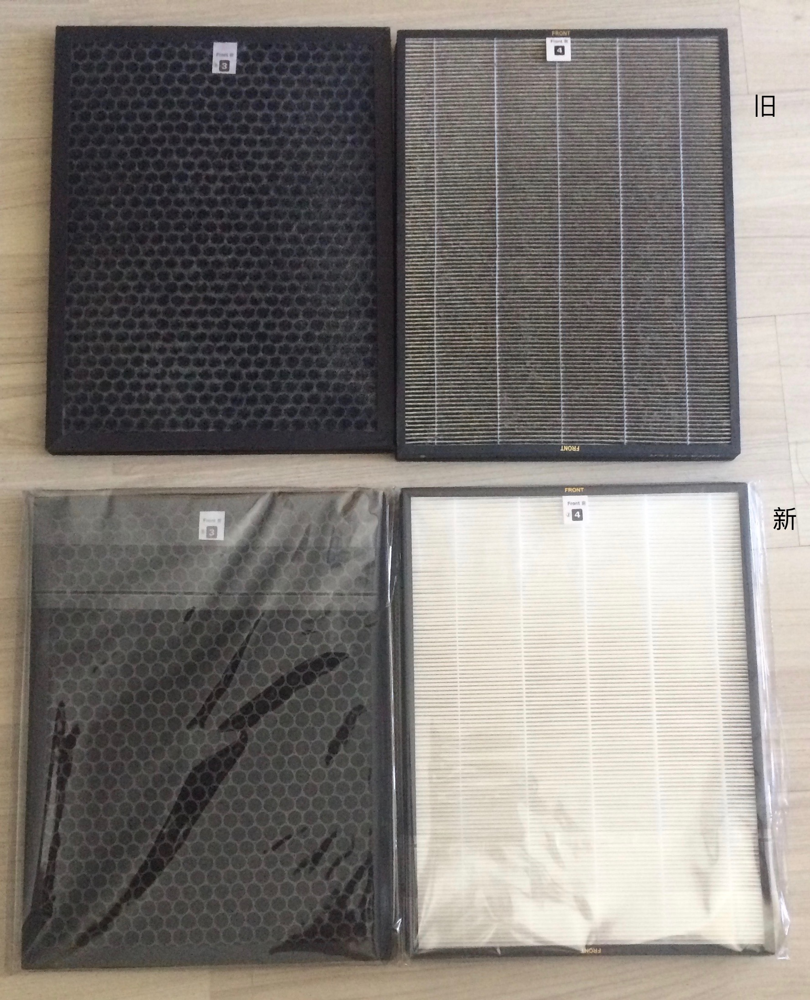

昨天，2017 年 5 月 4 日，是青年节，也是一次相当严重的雾霾污染天气。 我看到好多人都跟我一样纪念当年的进步先辈，看到现在的社会建设，感到由衷欣慰，笑得张开了嘴。 然后开始咳嗽，咽喉疼痛，眼睛刺痛。
我随手打开了手机搜了一下，虽然其他人还在讨论学术，我走神了。
中国环境监测总站05月04日09时更新空气质量指数:500(严重污染) 北京空气质量实时数据 (24小时趋势图) 更新时间:2017-05-04 09:00
北京空气质量历史数据 (过去10天趋势图) 更新时间:2017-05-04 09:00

我能感觉到自己的眼睛开始逐渐刺痛，咽喉开始感觉到一股莫名的燥热，喘息觉得逐渐地越来越吃力。
是的，我是一个“完蛋又可恶”的敏感体质者，我的呼吸道等多重系统都非常敏感又脆弱，社会达尔文主义的流氓大可以称我为“劣质的淘汰品”。
然而尼玛体质敏感不是我主观意愿决定的对不对？
我真的不想活在空气污染里，更不想这么死掉。
我还想每个月领取国家的 1500 元人民币的博士补助。 我还想继续翻译各种我认为很有趣味和意义的课程。 我还想刚写完一篇文章准备润色好发出去参与更大规模的学术讨论。 我还想毕业之后赶紧找个博士后站点之后生个宝宝来一点点看着他长大。 我还想赚点钱让媳妇休息一下，也让爸妈和岳父岳母都不用再操劳。
我刚刚才三十岁，我还想再活七十年八十年。 昨晚骑着自行车回来的路上，虽然我戴着 N95 的口罩却依然异常痛苦。 感觉似乎自己就这样下去可能很快就死掉了。。。
而我的媳妇每天上下班更是奔波在公交和地铁之间，我每次想到她都觉得很对不住她，因为我还在读书，几乎没有任何收入，家里的开销都靠她辛辛苦苦讲课的收入。
还好我回到了家，打开了空气净化器，但是空气净化器报警了。于是我拆下旧的滤芯，来换上新的。
当然我习惯性来拍照了。 实际上眼前这种景象已经不能震撼我了，我在几年前就开始每次都习惯这种情况了。
不过我记不清这个滤芯是1月换的还是2月换的了。
 空气净化器滤芯的颜色对比。 我遇到过无数人跟我说这点污染没什么，但是如果他们自己把这些黑色的东西吸取进入肺中，还会这么说么？
我的屋里有两台空气净化器7×24小时开动，窗户密封通过空调新风系统进行换气循环。我几乎从来没在污染的天气开过窗户，这里的净化器滤芯尚且如此。
那么大家想象一下，你开着窗户进雾霾的办公室会什么样？
强迫青少年雾霾天气跑步又是什么样？
没有任何保护措施每天开窗上课的高校教室又什么样？
当然，我这个净化器滤芯的功耗、风速、使用时间等等都没有任何定量，所以必然不能作为科学实验来解读。甚至我推测可能有洗地之徒会说假如时间足够长，这些污染物分批多次进入人体就可以代谢排出去等等。
总之我们不能指望这世界上的无耻之徒，他们总要为丑恶的事物辩护的。
我想我们应该做的是保护自己。
所以，同学们，你们是否有考虑要求学校在教室中安空气净化器并且至少不在强雾霾天开窗户？
然后，老师们，你们是否有想到自己以及子女也可能受到了污染的伤害，或者至少要求学校给办公室安放空气净化器？
最后，每一个人，哪怕你是坚定的洗地之徒，哪怕你有多么的无耻无底线，那是否要尊重他人保护自身生命健康安全的最基本的权利？
是的，治理雾霾我没出什么力，因为我不会开汽车，也没有直接烧煤，更不控制某家工厂的排放量。所以我只能保护我自己，戴口罩，开净化器。
那么，保护自己有错么？如果没有，大家是否应该一起行动起来保护自己？